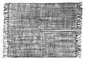
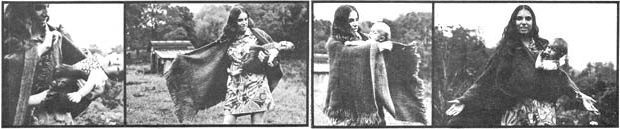

Most parents who want something to carry their babies in go out and buy a commercial baby-carrier . . . you know, one of those gizmos that goes on your back like a knapsack or straps the child to your belly. Although these commercial gadgets are convenient because they free your hands, they are inconvenient in that you have to fight straps and buckles to get your baby in and out of them. For car rides, walks, visits or errands, on which both hands aren't absolutely needed, I've found it's much better to carry my little one in a shawl.
Shawl-carrying simplifies life with a small baby so much, you'd think the practice would be a widespread element of the new life-style . . . but it isn't. I had to get the idea from watching women of the Taos Pueblo Indian village, standing around, relaxed and poised-as unburdened as the breeze-chatting and holding their chubby toddlers in their arms with the help of triangular, black-fringed shawls.
Yet when I became pregnant soon afterwards, I started keeping my eye open, not for a shawl, but for a commercial baby-carrier. When I did come into possession of both a hand-me-down Japanese belly-position carrier and a backpack carrier, however, the Japanese model got lost and Ama Selu turned out to be so small (5 lbs., 6 oz. at birth) that she needs padding in the backpack even now at the age of five months.
Though pint-sized, Ama was an awkward bundle and seemed heavy in my arms. So, when she was two months old, and Mary, a friend, offered to lend me her ruana -a heavy woolen shawl from South America used as a baby-carrier-I was delighted! Here was a shawl designed for carrying babies. I wanted to try it out with Ama immediately!
It embarrasses me now to recall the clumsy pouch I fumbled together for Ama with the ruana and several large safety pins. When I tried to carry her in it she wiggled and screamed. Luckily, another friend, Betsy-who had originally brought Mary's ruana back from Colombia-knew how to adjust it.
Betsy obligingly demonstrated proper ruana technique with her five-month-old son . . . and I came down hard on myself for my over-civilized, needlessly complicating, western mentality. Safety pins indeed!
The technique was surprisingly simple: Betsy just tucked the ends of the shawl under her baby's bottom. The youngster's weight forced the tuckedup ends against his mom's other clothes, and friction produced a really tight pouch. (In somewhat the same way, women of India wrap their saris out of a single piece of cloth, making a sort of gathered skirt and tunic with never a pin, snap or string.)
Once I got the knack, Ama was very happy and comfortable in the ruana . . . and it soon seemed less like a garment than a pair of wonderfully flexible, auxiliary arms I'd sprouted to help with the baby.
The ruana is a rectangular blanket, 4' wide by 4'8" long, fringed on the ends and split down one end to the center. Of double-woven Colombian llama wool, the ruana is practically snow, rain and wind-proof. I think it's actually a better baby-carrier than the triangular shawls used by the women of the Taos Pueblo.
When I first saw my ruana, I figured that you wore it like you wear a triangular shawl . . . with the unbroken, fringed end straight down your back, and the two split-ends even in front. But the ruana's worn a bit differently.
The unbroken, fringed end doesn't hang completely down your back, but is shifted to the right shoulder and hangs mostly down your right arm. The length of the ruana wraps around your back and the two split-ends are drawn to the front, the one coming over the left shoulder being shorter than the end coming over the right.
To carry Ama then, I pick her up facing me and sit her on my belly or left hip. I wrap the shorter left-hand split-end of the ruana around her back and tuck it up between her legs. Then I wrap the longer right-hand split-end over the other and also tuck it up between Ama's legs.
With a little adjustment Ama can sit up and peek out, sleep sitting up against my breast or even lie down. No matter what her position, only a little support and steadying with my left hand is necessary.
The unsplit fringed end, hanging down my right arm, comes in handy occasionally by providing a corner to cover the baby's face from a sudden gust of wind or rain.
Carrying Ama this way my right arm is completely free, and I've done light shopping and taken walks-even hiked up and down West Virginia hillsides so steep I had to grab branches to keep my balance-with Ama snugly tucked and perfectly safe in the ruana. Riding in a car or sitting outside, I've let these subsidiary arms hold Ama in place while she nursed or slept.
Carried in the ruana, Ama's face is right up next to mine. She feels the comfort of my body warmth and the vibrations of my speech . . . and is really intimate with the rhythms of my walking, sitting and rising. The same would be true of a commercial baby-carrier, except that-with one of those-she'd relate to the back of my head or belly button rather than my face. You can't cook dinner or plant a garden with one hand, however, so sometimes I do carry Ama in the backpack . . but neither she nor I enjoys it in the same way.
Has carrying Ama around in the ruana contributed to her precocious social development? I don't know. Perhaps so, since she's spent so much time right next to my face, chest and voice box. It's a good perspective from which to catch on to the way of conversation, a strategic location from which to toss out killingly charming baby smiles and a secure throne from which to hold an audience with the world.
The ruana has eliminated the physical strain of carrying Ama and has helped me relax with her. With the help of the shawl, carrying my little one has become a graceful act, one of those archetypal gestures (like dancing around a night fire) in which I've found a healing echo of a more whole way of life.
When summer comes, I'll be facing the problem of finding a lightweight substitute for the heavy wool ruana. The material will have to be loose-woven and flexible, but not stretchy like knitting or crochet. Homespun cotton would be ideal if I had a friend with a loom, which I don't, so I'll probably copy the ruana pattern in one of the loose-woven cotton prints front India which are sold in most places as bedspreads.
By the way, if I couldn't find a ruana and I had to use a triangular shawl, I'd just steady Ama in the crook of my left arm, sit her on my hip, wrap the ends around her bottom and tuck them up between her legs.
I think that anyone who wants to experiment with this method of carrying a baby should try it. There's probably an old shawl which used to belong to your grandmother or your aunt up in an attic somewhere. A triangular shawl is just a folded square of material, and a ruana is nothing but a rectangular piece of fabric split to the middle and reinforced there. Either would be fairly easy to make if you can't find one. Try it. You won't be sorry.
|
 |
 |
|